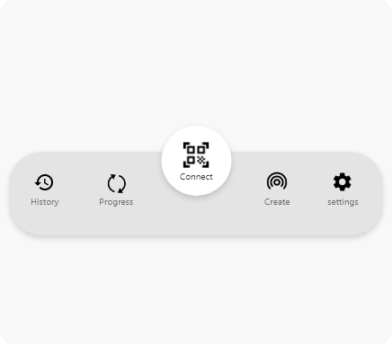
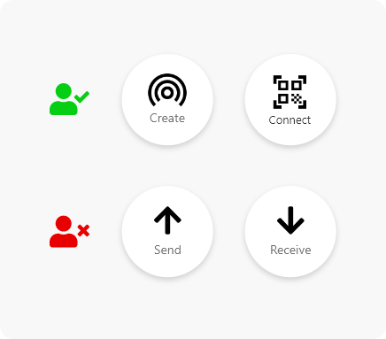
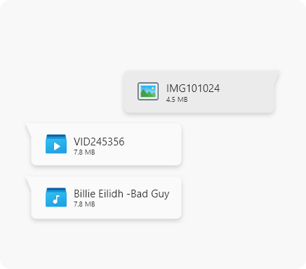
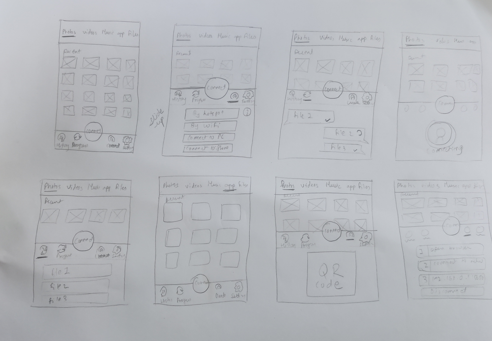

THE VISION
SHARELL - SHARE PARALLELY
What is sharell?
To establish some context here...Sharell is a free file sharing application which can transfer all types of files including photos, videos, apps, docs, zips, etc. Any device can share any type of file parallely with other devices regardless of the operating system and size of the file. A user can share files simultaneously with many other users. We focused on the below points
THE challenge
BREAKING THE CONVENTIONAL NORM
Our goal for the project was to design sharell in such a way that it retains its conventional file sharing functionalities with new unique design which is understandable by every age group of users.
research & approach
ANALYZING COMPETITORS
File sharing application is a very common tool, so the analysis of competitors plays an important role in providing insights on the features of the app. This would help our app to introduce a feature that has not been introduced till now by the competitors and would make our app stand out from others(feature wise). It will also give us an idea of their user experience and interface.
So, here is my competitor Analysis

GETTING TO KNOW USERS - PERSONA
It is very important to know your user base and to understand their needs on a deeper level. For this, personas come into the picture. Here are my two different types of users.


Designing
DESIGNING FOR WHAT USERS WANT
Synthesising goals from our user research served as a lens through which we could consider not only what the app should do, but also how it should feel. We believed this would be the difference between delivering a good experience and a great one.
Below given are the few changes that I made to the traditional file sharing design.
Apropriate Naming
In competitor analysis we found out every app was using the convention of “send” and “receive” buttons but it seemed irrelevant in our case. Sharell has the feature of parallel sharing, so the users would be able to send and receive simultaneously. So here both the users are sender and receiver. So if both the users wanted to share the files, the traditional naming convention would confuse them. Thus, we decided to name “connect” and “create”, which did much better in user testing.

Grouping and accessibility
The main function of our app is to share files via WiFi or hotspot connection. So, the connection and it’s related settings were grouped together and placed at the most accessible area of the mobile phone i.e., the bottom(According to the Thumb usage rule). Not only connection related settings but also the most required and necessary functions like “progress” and “history”

Not the normal progress tab
Progress needs to show the sent and received files, the traditional method to show them was by using the tabs of sent and received. But what we did was place them like chats. The received files on the left and sent files on the right. In this arrangement, the users did not need to recall, but recognize the interface as it matches the chatting apps.

Low fidelity
Wireframes

Validation
Testing our assumptions
We designed a usability test plan and conducted the usability testing of the wire-frame prototype to validate the application design. Test scenarios were given to the participants and their behavior was observed. Participants were encouraged to speak up whatever came to their mind while using the prototype and they were observed. Feedback received from the participants were analyzed, which gave us more clarity for the application design system and the user’s thought process.

The refinement
SOME LAST MINUTE MODIFICATIONS
From the usability testing we got to know the loopholes in our experience. One major thing lacking was the “Help” button to guide users when they are stuck. It was the most obvious thing that we missed in our experience design, but thanks to usability testing. After fixing the issues we discovered from the usability testing, we conducted another round of usability testing with different users and the results were much more satisfying than before.
UI Design
BRINGING ALL TO LIFE
After fixing the discovered issues from Usability testing, we started designing the User Interface. We took the shades of purple to give it more of a rich and premium look.